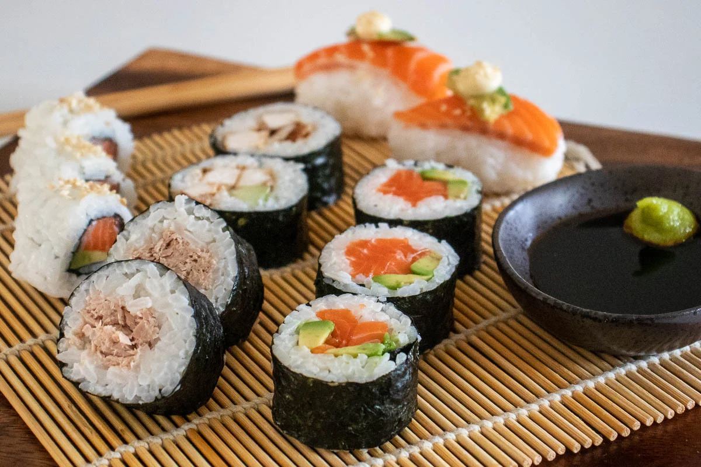

sushi

What you need
-
A bamboo sushi mat, these are inexpensive and easy to find. Nori sheets,
these are sheets of seaweed for making sushi and can be found in most
supermarkets.
-
Sushi seasoning (vinegar), you can make this at home and it's fairly
easy to do. But for a beginner's guide to making sushi, let's keep it
simple and use store bought sushi seasoning / vinegar.
-
Rice, you can buy sushi rice but you can use medium grain rice which is
normally cheaper and easier to find.
Directions
- Preheat the oven to 300 degrees F (150 degrees C).
-
Bring water to a boil in a medium pot; stir in rice. Reduce heat to
medium-low, cover, and simmer until rice is tender and water has been
absorbed, 20 to 25 minutes.
-
Mix rice vinegar, sugar, and salt in a small bowl. Gently stir into
cooked rice in the pot and set aside.
- Lay nori sheets on a baking sheet.
- Heat nori in the preheated oven until warm, 1 to 2 minutes.
-
Center 1 nori sheet on a bamboo sushi mat. Use wet hands to spread a
thin layer of rice on top. Arrange 1/4 of the crabmeat, avocado,
cucumber, and pickled ginger over rice in a line down the center. Lift
one end of the mat and roll it tightly over filling to make a complete
roll. Repeat with remaining ingredients.
- Use a wet, sharp knife to cut each roll into 4 to 6 slices.